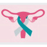

Cervical cancer
گروه هدف : سنین ۳۰ تا ۵۹ سال
سن شروع : ۲۱ سالگی یا ۳ سال بعد از اولین تماس جنسی
▫️پاپ اسمیر به روش liquid base هر ۲ سال یا به صورت معمولی هر سال
▫️۳۰ سالگی به بالا : در صورتیکه ۳ مورد قبلی نرمال باشد ، در ادامه هر ۳ سال یکبار انجام شود ( یا پاپ اسمیر+ تست HPV هر ۵ سال )
▫️۷۰ سالگی به بالا : اگر ۳ پاپ اسمیر و یا ۲ تست پاپ اسمیر + HPV منفی باشد ، دیگر نیازی به تست نیست
روش های غربالگری شامل پاپ اسمیر و تست HPV می باشد:
▪️در صورتیکه پاپ اسمیر و تست HPV هر دو منفی باشد ، هر ۲ سال یکبار از نظر علائم سرطان دهانه رحم بررسی شود و به فاصله ۱۰ سال برای غربالگری به ماما ترجاع شود
▪️در صورتیکه تست HPV از نظر تیپ ۱۶ و ۱۸ مثبت باشد و یا در کنار سایر تیپ ها ( به جز ۱۶ و ۱۸ ) ، پاپ اسمیر پرخطر داشته باشد ، به سطح ۲ ارجاع شود
▪️در صورتیکه تست HPV از نظر سایر تیپ ها ( به جز ۱۶ و ۱۸ ) مثبت باشد و پاپ اسمیر پر خطر نباشد ، باید یکسال بعد جهت غربالگری مجدد به ماما ارجاع شود
رعایت نکات زیر در نمونه برداری را مد نظر قرار دهید:
واکسن HPV ( معروف ترین نوع = گارداسیل)
نکته : پاپ اسمیر اگر به تنهایی تجویز گردد ، هر ۳ سال یکبار بایست انجام شود
نکته: آزمون مولکولی HPV هر ۱۰ سال یکبار پیشنهاد می شود.
نکته : بهترین زمان برای انجام تست پاپ اسمیر حداقل ۵ روز بعد از اتمام خونریزی عادت ماهانه است.
بررسی از نظر وجود علائم ۳گانه زیر:
۱- AUB شامل :
▪️Post coital bleeding
▪️خونریزی بین قاعدگی
▪️خونریزی بعد از یائسگی
۲- درد هنگام نزدیکی جنسی
۳- ترشح بدبو واژینال
1️⃣ سرویسیت
2️⃣ واژینیت
PID 3️⃣
4️⃣ عفونت ها
5️⃣ بیماری پاژه
6️⃣ سرطان واژن
7️⃣ سرطان اندومتریال
8️⃣ پولیپ سرویکس
9️⃣ اندومتریوزیس
🔟 Cervical leiomyoma
Cervical lymphoma 1️⃣1️⃣
Cervical ectopic pregnancy 1️⃣2️⃣